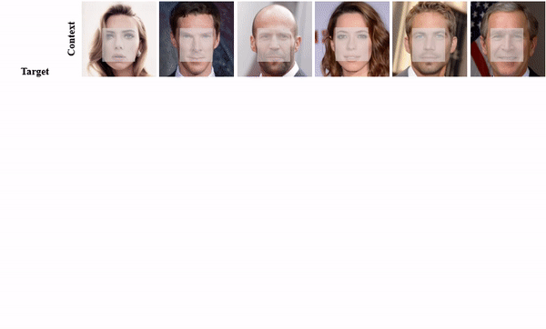

In-Domain GAN Inversion for Real Image Editing
1The Chinese University of Hong Kong
2Xiaomi AI Lab
|  |
 |
@inproceedings{zhu2020indomain,
title = {In-domain GAN Inversion for Real Image Editing},
author = {Zhu, Jiapeng and Shen, Yujun and Zhao, Deli and Zhou, Bolei},
booktitle = {Proceedings of European Conference on Computer Vision (ECCV)},
year = {2020}
}


Comment: Proposes a technique for semantic face editing in latent space.